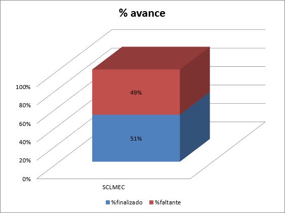
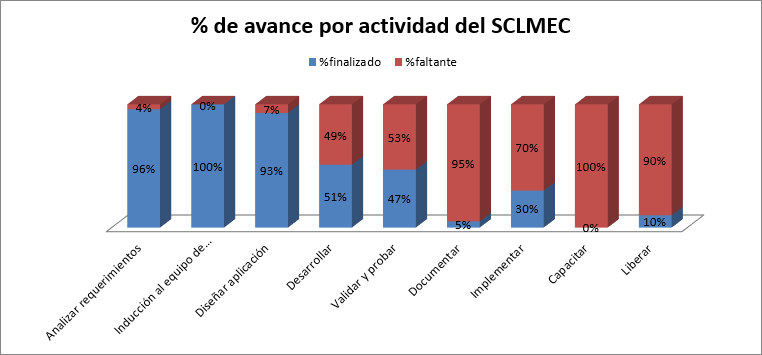

| Proyecto: | Sistema de Control de Mantenimiento de Equipo de Cómputo |
|---|---|
| Fecha del Reporte de Estado: | 25/09/2013 |
| Número Interno de la Versión: | 0.1.0 |
|
Cuestiones Abiertas:
|
9 - Codificación de características 15 - Documentación ténica de características 27 - Documentación de usuario de características |
| Cuestiones Cerradas: | 18 - Codificación de características 12 - Documentación técnica de características |
| Recursos usados en este periodo: | 2 Líderes de proyecto 10 Desarrolladores |
| Resumen del Estado: | Total del sistema: 51% completado, 49% faltante. |
| Documentos Relacionados: |
Estado al 25 de Septiembre de 2013

| Resumen del proyecto | |||||||||
|---|---|---|---|---|---|---|---|---|---|
| Actividades | Fecha de inicio | Fecha de finalizado | No. Días | %finalizado | %faltante | Fecha Actual | Días transcurridos | %planeado | %desfase |
| Proyecto SCLMEC | 27/06/2012 | 27/06/2014 | 431 | 51% | 49% | 25/09/2013 | 260 | 60% | 9% |

| Resumen por actividades | |||||||||
|---|---|---|---|---|---|---|---|---|---|
| No. de Tarea | Tareas | Fecha de inicio | Fecha de finalizado | No. Días | % del Proyecto | %finalizado | %faltante | Avance en días | Días faltantes |
| 1 | Analizar requerimientos | 27/06/2012 | 10/08/2012 | 18 | 4% | 96% | 4% | 17.28 | 0.72 |
| 2 | Inducción al equipo de desarrollo | 13/08/2012 | 24/08/2012 | 10 | 2% | 100% | 0% | 10 | 0 |
| 3 | Diseñar aplicación | 27/08/2012 | 28/09/2012 | 25 | 6% | 93% | 7% | 23.25 | 1.75 |
| 5 | Desarrollar | 01/10/2012 | 20/02/2014 | 300 | 70% | 51% | 49% | 153 | 147 |
| 6 | Validar y probar | 21/02/2014 | 28/03/2014 | 24 | 6% | 47% | 53% | 11.28 | 12.72 |
| 7 | Documentar | 28/03/2014 | 14/05/2014 | 22 | 5% | 5% | 95% | 1.1 | 20.9 |
| 8 | Implementar | 14/05/2014 | 27/05/2014 | 9 | 2% | 30% | 70% | 2.7 | 6.3 |
| 9 | Capacitar | 28/05/2014 | 17/06/2014 | 15 | 3% | 0% | 100% | 0 | 15 |
| 10 | Liberar | 18/06/2014 | 27/06/2014 | 8 | 2% | 10% | 90% | 0.8 | 7.2 |
| Total | 27/06/2012 | 27/06/2014 | 431 | 100% | 51% | 49% | 219.41 | 211.59 | |
| Riesgo | Mitigación |
|---|---|
| Pudiera surgir algún retraso deibdo a modificación al procedimiento de Diseño y Desarrollo de Aplicaciones Web. | Actualizar planeación para ajustar el seguimiento al proyecto. |
| Actividad | Fecha |
|---|---|
| Finalizar desarrollo de versión 0.1.0 y 0.2.0 | Marzo de 2014 |
{kind=link}